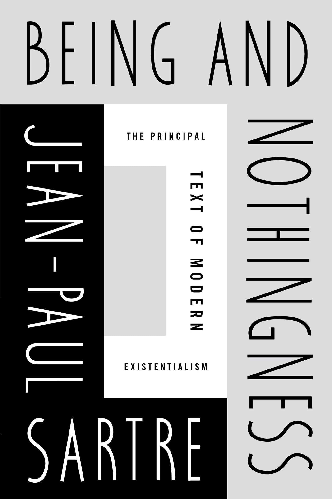
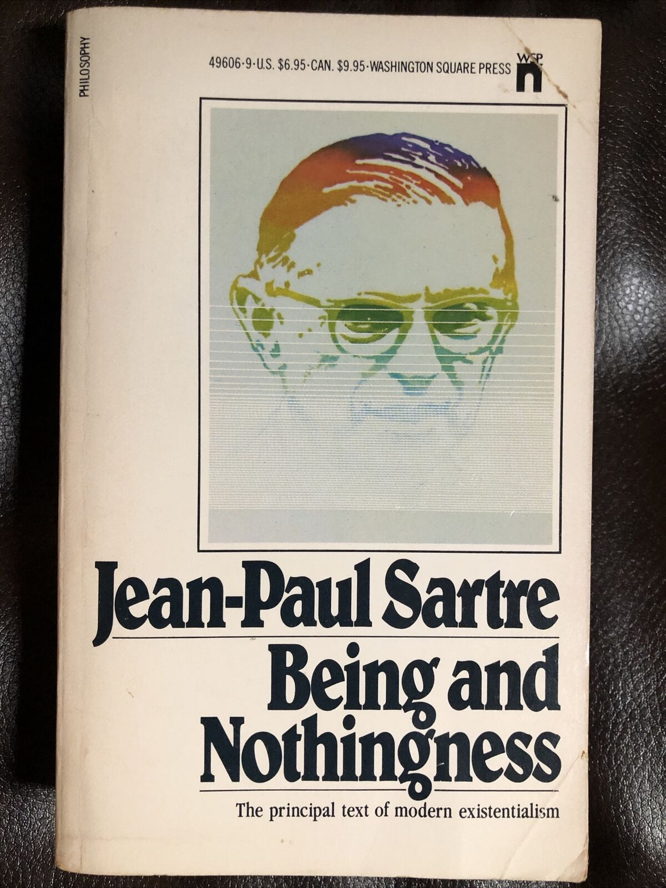
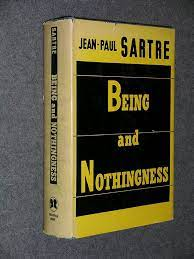
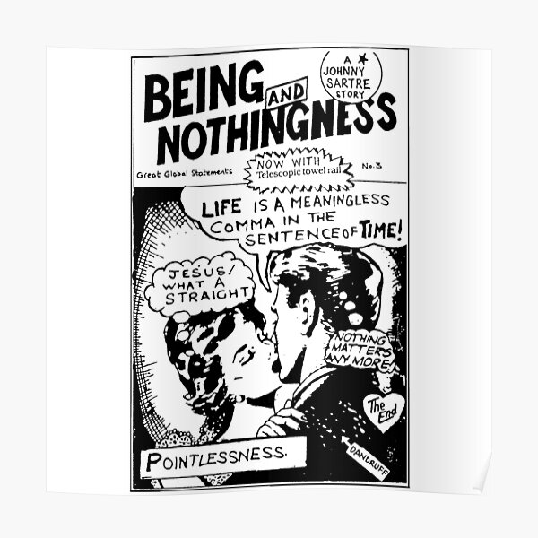

<!---RMIT University Vietnam
  Course: COSC2430 Web Programming
  Semester: 2023
  Assessment: Assignment 1 - Static Website
  Author: Pham Minh Quang
  ID: S3978814
  Acknowledgement: Book Detail Page--->
<!DOCTYPE html>
<html>
<head>
    <title>Book Details Page</title>
    <meta name="viewport" content="width=device-width, initial-scale=1">
</head>
</html>
<meta name="viewport" content="width=device-width, initial-scale=1">
  <link rel="stylesheet" type="text/css" href="booksdetail.css">
  <link rel="stylesheet" href="https://cdn.jsdelivr.net/npm/@fortawesome/fontawesome-free@6.2.1/css/fontawesome.min.css">

</head>
<body>
    <section class="header">
        <nav>
            <a href="index.html">
            </a>
            <div class="nav-links" id="navLinks">
                <i class="fa-solid fa-x" onclick="hideMenu()"></i>
                <ul>
                    <li><a href="index.html">HOME</a></li>
                    <li><a href="best.html">BESTSELLERS</a></li>
                    <li><a href="philoshophy.html">PHILOSOPHY</a></li>
                    <li><a href="neuroscience.html">NEUROSCIENCE</a></li>
                    <li><a href="contact.html">CONTACT</a></li>
                </ul>
                
            </div>
            <i class="fa-solid fa-x" onclick="showMenu()"></i>
        </nav>
        </section>
        <!---JavaScript--->
<script>
            var navLinks = document.getElementById("navLinks");
            function showMenu(){
                navLinks.style.right = "0";
            }
            function hideMenu(){
                navLinks.style.right = "-200px";
            }
</script>
<section class="det">
    <h2><a href="index.html">Home</a> > <a href="best.html">Bestsellers</a> > Being and Nothingness</h2>
    <div class="desc">
        <div class="imga">
            
        </div>
        <div class="timg">
            
            
            
            
        </div>
        
       
        
    </div>
    <div class="money">
        <h1>$20</h1>
    </div>
    <button class="button">Purchase</button>
    <h1>Being and Nothingness</h1>
    <p>Sartre introduces Being and Nothingness, his single greatest articulation of his existentialist philosophy, as “an essay in phenomenological ontology.” Essentially, it is a study of the consciousness of being. Ontology means the study of being; phenomenological means of or relating to perceptual consciousness.</p>
    <p>In the introduction to Being and Nothingness, Sartre details his rejection of Kant’s concept of noumenon. Kant was an idealist, believing that we have no direct way of perceiving the external world and that all we have access to is our ideas of the world, including what our senses tell us. Kant distinguished between phenomena, which are our perceptions of things or how things appear to us, and noumena, which are the things in themselves, which we have no knowledge of. Against Kant, Sartre argues that the appearance of a phenomenon is pure and absolute. The noumenon is not inaccessible—it simply isn’t there. Appearance is the only reality. From this starting point, Sartre contends that the world can be seen as an infinite series of finite appearances. Such a perspective eliminates a number of dualisms, notably the duality that contrasts the inside and outside of an object. What we see is what we get (or, what appears is what we know).
    </p>
    <p>Sartre next introduces the related truth that the being-for-itself possesses meaning only through its perpetual foray into the unknown future. In other words, a man is not essentially what one might describe him as now. For example, if he is a teacher, he is not a teacher in the way that a rock, as a being-in-itself, is a rock. In truth, the man is never an essence, no matter how much he strives at self-essentialism. The way he interprets his past and foresees his future is itself a series of choices. As Sartre explains, even if an individual can be said to have a certain physical nature, as a chair does (e.g., “he is six feet tall, and the chair two”), the individual nonetheless projects himself by ascribing meaning to, or taking meaning from, his concrete characteristics and thus negating them. The paradox here is great. The for-itself, desiring to become one within the in-itself, imposes its subjectivity on the other’s objectivity. The for-itself is consciousness, yet the instance this consciousness makes its own being a question, the irreconcilable fissure between the in-itself and the for-itself is affirmed.</p>
         <br>
</section>

</body>
<footer>
    <nav>
        
        <div class="footer-nav-links">
    
            <a href="about.html">ABOUT US</a>
            <a href="privacy.html">PRIVACY POLICY</a>
            <a href="terms.html">TERMS OF USE</a>
            <a href="contact.html">CONTACT US</a>
            
        </div>
    </nav>

</footer>
</html>